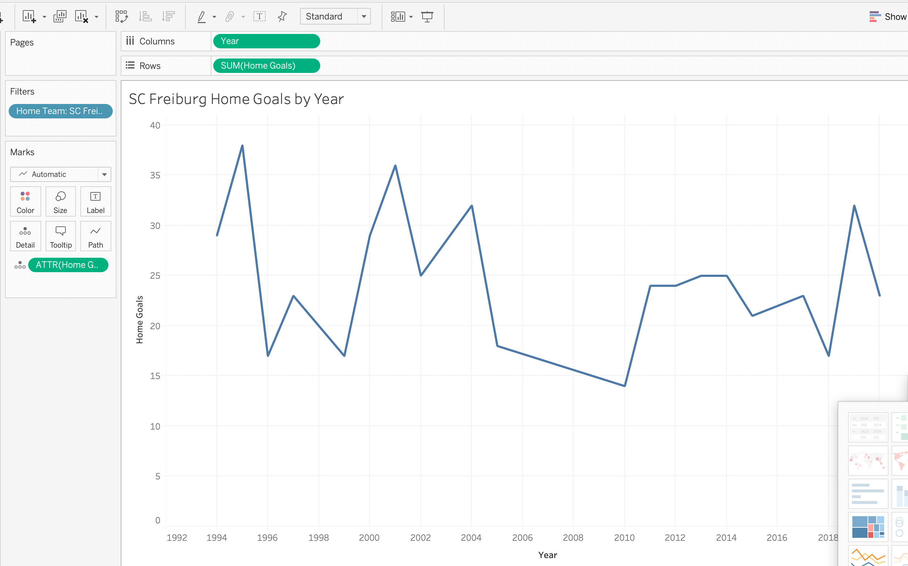
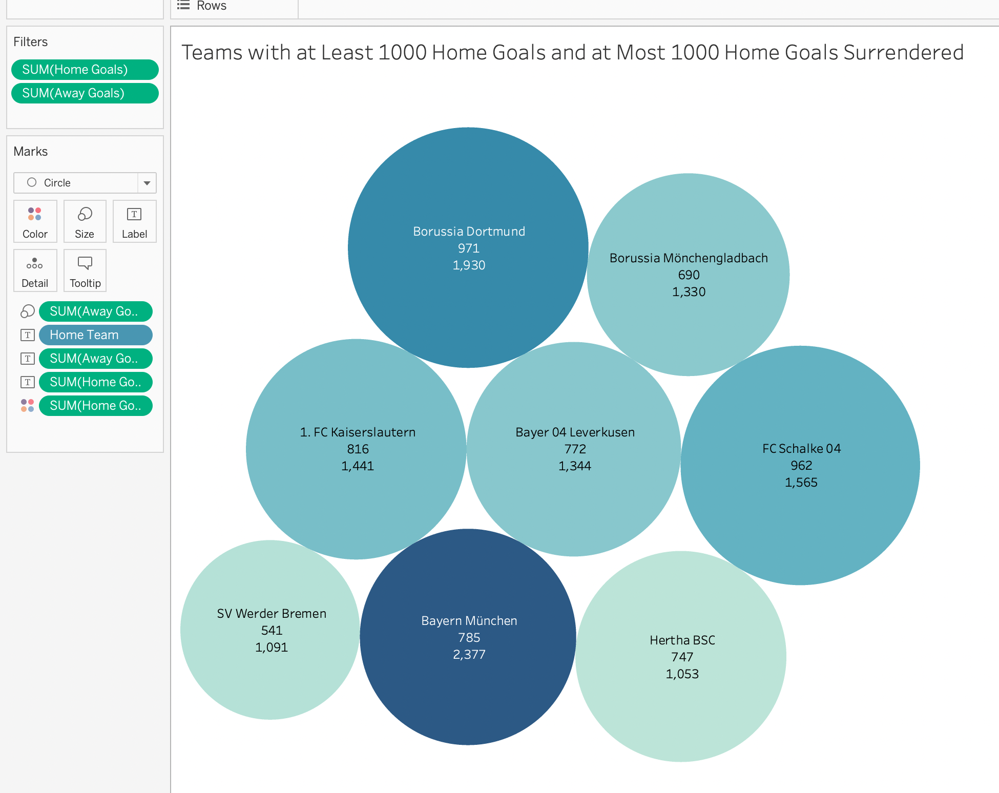
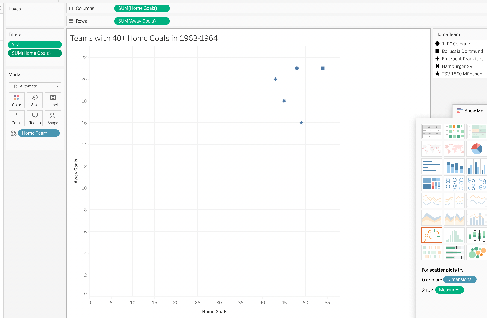
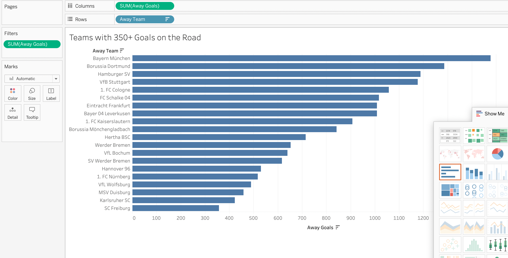

LECTURE TWO: Dashboarding in Tableau
Objectives
- Build a Dashboard in Tableau
- Experiment with different viz styles
The primary purpose of this lecture is to illustrate how to build a dashboard in Tableau.
It utilizes a dataset that contains historical information about soccer games played in the German Bundesliga from 1963-2020.
In this lecture we'll walk through the construction of several vizzes, put them into a dashboard,
and then leave time for students to experiment on their own with a similar task.
1. Build a line chart of SC Freiburg's home goals year over year. To do this you'll need to add the Home Team dimension
to your workspace and then filter to select only SC Freiburg. The chart should look like this:

2. Build a packed bubble chart of the teams that have at least 1000 home goals and at most 1000 goals given up at home.
Drag the Home Team dimension into your workspace, as well as the Home Goals and the Away Goals measures.
These goals will be automatically summed. The chart should look like this:

3. Build a scatter plot of the teams that had at least 40 home goals (filter on the Home Goals measure)
in the year 1964 (filter on the Year dimension), where home goals are plotted on one axis and away goals
are plotted on the other. Edit the marker shape to be "Filled" rather than "Default". The chart should look like this:

4. Build a horizontal bar chart of the teams that have at least 350 goals on the road. Bring in the Away Team dimension
and the Away Goals measure into your workspace and then filter on Away Goals. Sort in descending order by clicking on
the "Descending Sort" button in the top toolbar. The chart should look like this:

Now: Add some or all of these worksheets to a new dashboard. If you set every object to "Floating" you can put each chart
exactly where you want it. Demonstrate that changes to the underlying worksheets also change the dashboard.
Give students some time to work on their own dashboard.
Here are some examples of tasks / charts they could build:
1. Build a line chart of the away goals year over year for Bayern München or Borussia Mönchengladbach.
2. Use a bar chart to illustrate the average home goals scored for every home team.
3. Build a packed bubble chart of the teams that have at least 1000 away goals and at most 1000 goals given up on the road.
Make sure to use the Away Team dimension!